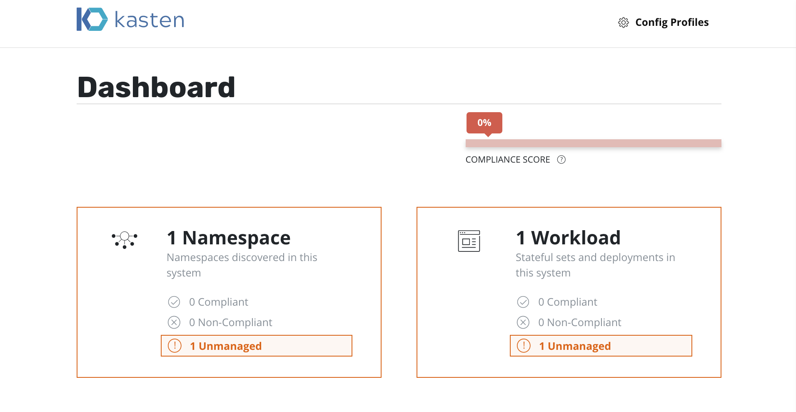
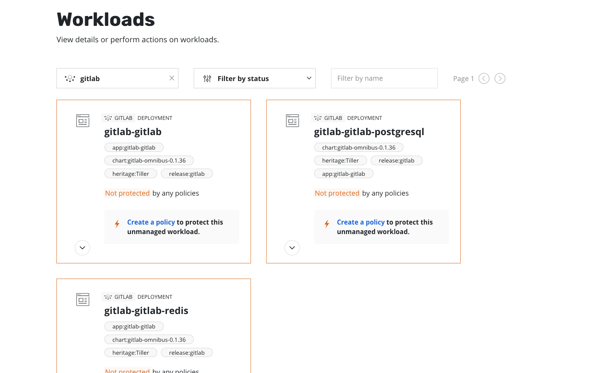
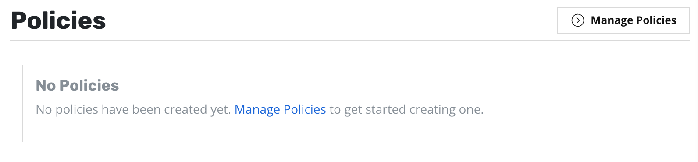
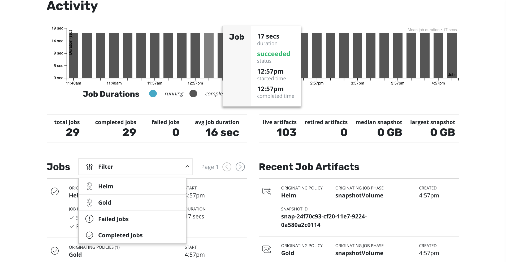

Dashboard Overview¶
The K10 dashboard is broken up into a number of different sections. While we will return to performing actions on these later, you can find a brief but useful description of the sections below.
System Overview¶
The first thing you see on the screen is a list of stateful applications (currently mapped to namespaces) and their associated workloads (stateful sets and deployments).
After filtering to only include objects that have stateful services (defined as containing a persistent volume), the above screen breaks down each section into three categories:
- Unmanaged: There are no protection policies that cover this object
- Non-compliant: A policy applies to this object but the actions associated with the policy are failing (e.g., due to underlying storage slowness, configuration problems, etc.) or the actions haven't been every invoked yet (e.g., right after policy creation)
- Compliant: Objects that both policies apply to and the policy SLAs are being respected
It is also easy to see system-wide compliance by looking at the bar just above this view.
Namespaces, Applications, and Workloads¶
The current version of the K10 platform assumes that applications and namespaces have a 1:1 correspondence but that is not a requirement. As one will see later, policies can be defined to only operate on a subset of the applications residing in a namespace. Assuming you have already installed applications, clicking on the namespace card on the dashboard will take you to the following view:

A namespace or application in turn is made up of multiple workloads including deployments and stateful sets. In the above diagram, we see the GitLab application composed of three workloads and a MongoDB application consisting of just one. By further clicking on the Namespace/Application, you will see the stateful workloads it is composed of including labels and individual workload protection status:
Finally, if you would like to view the volumes used by a workload,
just click on the pulldown associated with each workload and select
Workload Details.
Policies¶
Going back to the main dashboard, you will find a section on how to manage policies right under the overview section. Within K10, policies are used to automate your data management workflows. To achieve this, they combine actions you want to take (e.g., snapshot), a frequency or schedule for how often you want to take that action, and a label-based selection criteria for the resources you want to manage.
If you click on Manage Policies, you will notice in the below
screenshot that we currently do not create default policies at install
time. As a part of bringing the system into a compliant state, you
will later create new policies.
Activity¶
Below the policy management section of the dashboard, you will find activity data. This consists of a graph that shows all activity in the system. As there are no default policy-driven actions defined in the system, you will see no activity after first install but, once policies are defined, the graph will start displaying activity. Mousing over the graph will display job information such as status, job duration, job start time, and job completion time.
Some of the same activity information can also be viewed in tabular form under the graph. In particular, the dashboard first displays a summary of activity in the system including total jobs, average job duration, number of data artifacts, the size of those artifacts, etc.
Following the activity and artifact summary, the first column displays information on recent jobs. This includes the policy that generated the job, the job phases, and the start and completion times. You can also filtered the displayed jobs by the originating policy, failed jobs, and completed jobs.
The second column shows recent artifacts created by the system with additional information on the policy and job that generated the artifacts along with the artifact creation time and, optionally, deletion time.

{kind=link}
{kind=link}
{kind=link}
{kind=link}
{kind=link}